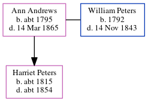

Ann Peters (née Andrews) c1795 - 1865
[ Home ] | [ Calendar ] | [ Surnames Index ] | [ Errors ] | [ Family History ]Ann Andrews, the wife of William Peters (the four times great-uncle of Nigel Horne), was born in Lyminge, Kent, England c. 17951,2,3, was baptised in Folkestone, Kent, England on 18 Jan 1795 and also married William (with whom she had 1 child, Harriet) there on 6 Feb 18135.
During her life, she was living in Folkestone in 18411; in Cheriton, Kent, England in 18512; and in Standford, Kent, England in 18613.
She died on 14 Mar 1865 in Lyminge4 (old Age) and was buried in Folkestone on 18 Mar 18655.
Children
- Harriet was born c. 1815
Citations
- 1841 England Census Online publication - Provo, UT, USA: The Generations Network, Inc., 2006.Original data - Census Returns of England and Wales, 1841. Kew, Surrey, England: The National Archives of the UK (TNA): Public Record Office (PRO), 1841. Data imaged from the National
- 1851 England Census Online publication - Provo, UT, USA: The Generations Network, Inc., 2005.Original data - Census Returns of England and Wales, 1851. Kew, Surrey, England: The National Archives of the UK (TNA): Public Record Office (PRO), 1851. Data imaged from the National
- 1861 England Census Online publication - Provo, UT, USA: The Generations Network, Inc., 2005.Original data - Census Returns of England and Wales, 1861. Kew, Surrey, England: The National Archives of the UK (TNA): Public Record Office (PRO), 1861. Data imaged from the National
- England & Wales, FreeBMD Death Index: 1837-1915 Online publication - Provo, UT, USA: The Generations Network, Inc., 2006.Original data - General Register Office. England and Wales Civil Registration Indexes. London, England: General Register Office. © Crown copyright. Published by permission of the Cont
- Public Member Trees Online publication - Provo, UT, USA: The Generations Network, Inc., 2006.Original data - Family trees submitted by Ancestry members.Original data: Family trees submitted by Ancestry members.
Media
Ann Andrews - death certificate

England Marriages 1538-1973 - R_847836960/2
Kent, Canterbury Archdeaconry marriages 1538-1928 - GBPRS/CANT/M/97135269/2
England Marriages 1538-1973 - R_848170966/2
England & Wales deaths 1837-2007 - BMD/D/1865/1/HQ/001235/031
Family Tree
Map
Generated by ged2site. Last updated on Jul 3, 2024
Known Issues
Baptism information not used to determine a parent
Listed in the residence for 1841, but spouse William Peters is not